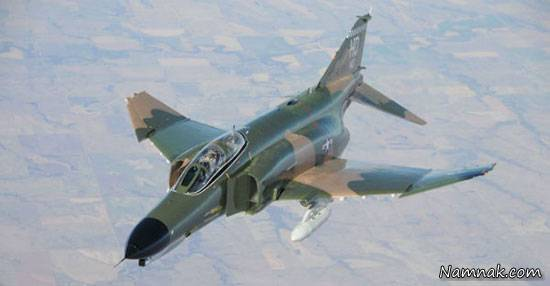
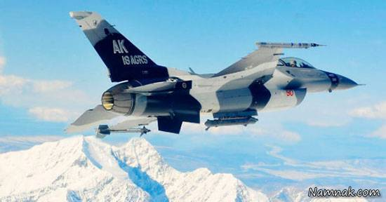

-
bird 1

این هواپیما، سریع ترین جت جنگنده در ارتش ایالات متحده به شمار می رود. استرایک ایگل (F-15E Strike Eagle) یک جت جنگنده دو کاره است که نخستین پرواز خود را در سال 1986 میلادی انجام داده. این هواپیما می تواند هم در ماموریت های هوا به هوا و هم در ماموریت های هوا به زمین به کار گرفته شود. استرایک ایگل توسط دو نفر هدایت می گردد و تاکنون موفق شده بیش از 100 نبرد هوا به هوا را بدون حتی یک شکست، با پیروزی پشت سر بگذارد. طول بال ها:11٫88 متر، 7٫5 سانت ضخامت طول:19٫2 متر سرعت:3017 کیلومتر بر ساعت قیمت: 31٫1 میلیون دلار (بر اساس دلارهای سال 1998) سامانه هدف گیری پیشرفته F-15E می تواند دشمن را از فاصله 16 کیلومتری مسیر یابی کند. بعد از آن، این داده ها در اختیار بمب های هوشمند و موشک ها قرار می گیرند. تصویر بالا، این جت جنگنده را در حال شلیک تله های هوشمند طی ماموریتی در افغانستان نشان می دهد.
-
bird 2
این جت جنگنده، هواپیمایی چند کاره محسوب می گردد که می تواند خود را با هر شرایط آب و هوایی وفق دهد و سرعتی معادل با 3087 کیلومتر بر ساعت داشته باشد. ایگل (F-15A Eagle) موفق ترین هواپیمایی به شمار می رود که تاکنون توسط آمریکا ساخته شده. طول بال ها:12٫8 متر، 22٫5 سانتیمتر طول:19٫2 متر، 22٫5 سانتیمتر سرعت:2655 کیلومتر بر ساعت قیمت:29٫9 میلیون دلار عملکرد این جت هم در عملیات هوا به هوا و هم در عملیات هوا به زمین، بسیار مناسب ارزیابی شده. در طول عملیات های «طوفان صحرا» و «حفاظ صحرا»، این جنگنده توانست از 39 نبرد خود 36 پیروزی به دست آورد.
-
bird 3
این فانتوم (The QF-4E Phantom) یک هواپیمای قابل کنترل است که بر اساس مدل قدیمی تر فانتوم II F4 ساخته شده. فانتومی که ما درباره آن صحبت می کنیم، نقشی بسیار کلیدی در نیروی هوایی ایالات متحده ایفا می نماید. این جت جنگی برای آزمایش موشک ها، رادار ها و موشک های زمین به هوا به کار گرفته می شود. فانتوم QF-4E تا سال آینده در دسترس خواهد بود و بعد از آن، جت QF-16 جایگزین آن می گردد. طول بال ها:11٫88 متر، 7٫5 سانتیمتر طول:19٫2 متر، 2٫54 سانتیمتر سرعت:2575 کیلومتر بر ساعت قیمت:2٫6 میلیون دلار
-
bird 4
این هواپیمای دو موتوره، به منظور تسلط بر مناطق هوایی طراحی گشته. «رپتور F-22A» برای فراهم نمودن نخستین فرصت های پیروزی به کار گرفته می شود. در واقع این جت توانایی آن را دارد که قبل از شناسایی، هدف را به کلی نابود کند. طول بال ها:13٫4 متر، 15 سانتیمتر طول: 18٫6 متر، 2٫54 سانتیمتر سرعت:2414 کیلومتر بر ساعت قیمت: 143 میلیون دلار «رپتور F-22A» به یک توپ 20 میلیمتری M61A2 و دو موشک هوا به هوای AIM-9 مجهز شده. اسلحه های داخلی اصلی آن می توانند 6 موشک رادار گریز AIM-120 یا AIM-120s همراه با بمب های هوشمند GBU-32 را با خود حمل کنند.
-
bird 5
این جنگنده در واقع نسخه اقتصادی هواپیمای اِسترایک ایگل F-15 محسوب می شود. با در اختیار داشتن توپ داخلی والکان F6، «فالکون F-16» می تواند 11 موشک را شلیک نماید. طول بال ها:9٫75 متر، 20 سانتیمتر طول: 14٫93 متر، 12٫5 سانتیمتر سرعت:2414 کیلومتر بر ساعت قیمت:18٫8 میلیون دلار
-
bird 6

این هواپیمای جنگنده، برای حمله به اهداف زمینی و دفاع از حریم هوایی ساخته شده. ارتش ایالات متحده، بودجه ای بالغ بر 1٫5 تریلیون دلار را برای ساخت و توسعه این هواپیما و جایگزین نمودن آن با هواپیماهای F-16، A-10، F-18، A-18 و AV-8B تا سال 2037 میلادی در نظر گرفته. طول بال ها:10٫66 متر طول:15٫24 متر، 15 سانتیمتر سرعت:1931 کیلومتر بر ساعت قیمت:85 میلیون دلار
-
bird 7
لنسر B-1B که طراحی اولیه آن به سال 1960 برمی گردد، می تواند با سرعتی مافوق صوت پرواز نموده و بارهای سنگین را حمل نماید. ارتش آمریکا این جت را ستون اصلی نیروی هوایی خود می داند. لَنسر B-1B در کمتر از 1 درصد عملیات جنگی نبرد عراق شرکت داده شده و با همین مقدار پرواز کم، توانسته بیش از 40 درصد بمب ها را روی اهداف بیاندازد. طول بال ها:41٫75 متر طول:44٫5 متر سرعت:1448 کیلومتر بر ساعت قیمت:317 میلیون دلار
-
bird 8
این بمب افکن راهبردی، از سال 1952 تاکنون عضو اصلی نیروی هوایی ارتش ایالات متحده به حساب می آمده. اِستِراتوفورتریز B-52 همواره در حال پیشرفت و به روز رسانی تسلیحاتی بوده، به طوری که آن ها اکنون می توانند موشک های زمین به هوای «استندُف» (Standoff) را شلیک نمایند. این هواپیما اخیرا برای مبارزه با داعش نیز به کار گرفته شده. طول بال:56٫38 متر طول:48٫46 متر، 14 سانتیمتر سرعت: 1046 کیلومتر بر ساعت قیمت:84 میلیون دلار
-
bird 9
هواپیمای «نورستراپ گرامان» (Northrop Grumman) یا همان B-2 که به عنوان بمب افکنی رادار گریز شناخته می شود، قادر است سیگنال ها را به خود جذب کند و بدون آن که شناسایی شود، به پرواز خود ادامه دهد. طول بال ها: 52٫42 متر طول: 21 متر سرعت:1046 میلومتر بر ساعت قیمت:1٫157 میلیون دلار در دوران «ریگان» و «کارتر» روسای جمهور پیشین آمریکا، این هواپیما برای حمل تجهیزات هسته ای مورد استفاده قرار می گرفت. اما سال 2003 میلادی و در طول جنگ عراق، از آن برای حمل بارهای مرسوم در عملیاتی به نام «ایجاد رعب و وحشت» استفاده شد.
-
bird 10
این جت جنگی بیشتر با نام «وارتانگ» (warthog) شناخته می شود و خیلی راحت می توان آن را به وسیله شکل دماغه اش شناسایی نمود. «تاندِربولت» (Thunderbolt II) هواپیمایی تک سرنشین است که بیشتر برای عملیات حمایت هوایی و شناسایی مناطق جنگی به کار گرفته می شود. طول بال ها:17٫37 متر، 15 سانتیمتر طول:16٫15 متر، 14 سانتیمتر سرعت:833 کیلومتر بر ساعت قیمت:18٫8 میلیون دلار این هواپیما به توپی جنگی مجهز شده که می تواند با سرعت 3900 بر دقیقه شلیک کند. همچنین تاندِربولت می تواند موشک های هوا به هوا و هوا به زمین را نیز شلیک نماید. این جت نیز اکنون برای نبرد علیه داعش به کار گرفته می شود.